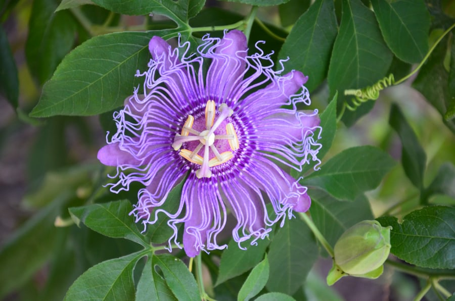

Welcome to Beautiful Flowers
One of the flowers I am going to talk about and you will see a image of is the purple passionflower. It is an herbaceous vine, up to 25 feet long, that climbs with axillary tendrils, or sprawls along the ground. This unusual flower is widely distributed in the Southeast, especially from the state of Florida all the way to Texas. They were given the name passion flower or passion vine because the floral parts were once said to represent aspects of the christian crucifixion story. The colors are not that wide in range but they have pretty displays of light and dark purple for everyone to enjoy.
I am more fascinated with the color and how we see them. That color has to do with pigments. The fewer the pigments the lighter the color and vice versa. The most common of pigments come in a form of anthocyanins. These range in color from white to red, to blue to yellow, to purple and even black and brown. Carotenoids are responsible for some yellows, oranges and reds. While many flowers get their colors from either anthocyanins or carotenoids, there are some that can get their colors from both! But either way no matter what shape, form and colors they all have unique pigment that makes them the flowers we know today.
